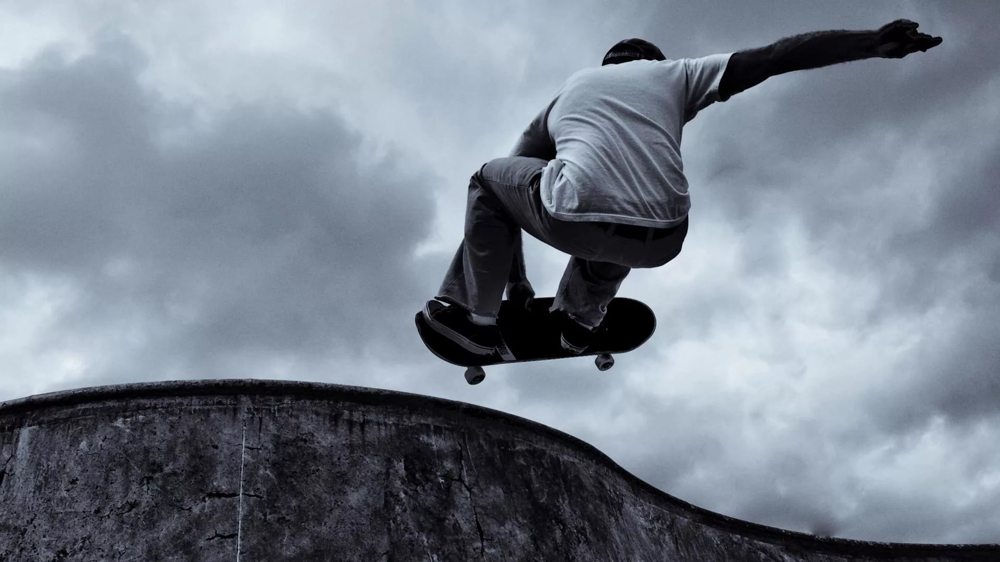

Скейтбординг

Скейтбординг — это очень зрелищный и
по-настоящему экстремальный вид спорта, который представляет собой
катание на роликовых досках с преодолением препятствий и выполнением акробатических трюков.
Скейтбординг – это один из самых доступных видов спорта практически для любого желающего, ведь стоимость доски сравнительно невелика.
Скейтбординг – это один из самых доступных видов спорта практически для любого желающего, ведь стоимость доски сравнительно невелика.
Всё о скейтбординге с командой Adidas scateboarding
Эксперты:
- Сайлас Бакстер-Нил
- Родриго Ти-Экс
- Джейк Доннелли
- Нестор Джадкинс
- 4 причины кататься на скейте
- Это эффективное кардио
- У скейтеров не бывает плоскостопия
- Разовьёшь координацию
- Сохранишь душевное состояние
- 5 cоветов на вопрос:с чего начать?
- Знакомься на мягком
- Следи за центром тяжести
- Попробуй трюк
- Береги руки
- Вдохновляйся!
Калифорнийские серферы изобрели скейтборд, как сухопутный аналог серфа. К тому же скейт спасал серферов от скуки в отсутствии волн. Это была простая доска для сёрфинга с прикрученными к ней колесами.
| Название | Уровень | Умеют |
|---|---|---|
| Switch Ollie | Для начинающих | 12 112 |
| FS 180 | Для начинающих | 25 143 |
| BS 180 | Для начинающих | 18 170 |
| BS 360 | Средний | 1 516 |
| Powerslide | Cредний | 7 900 |